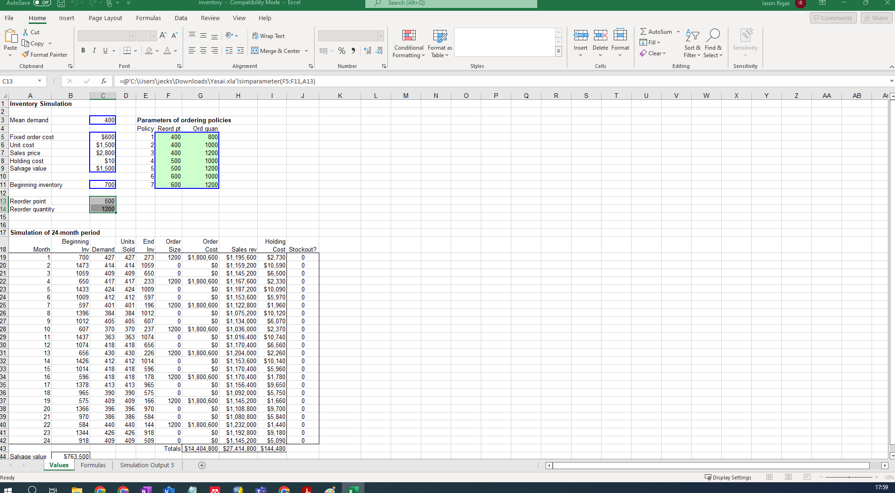
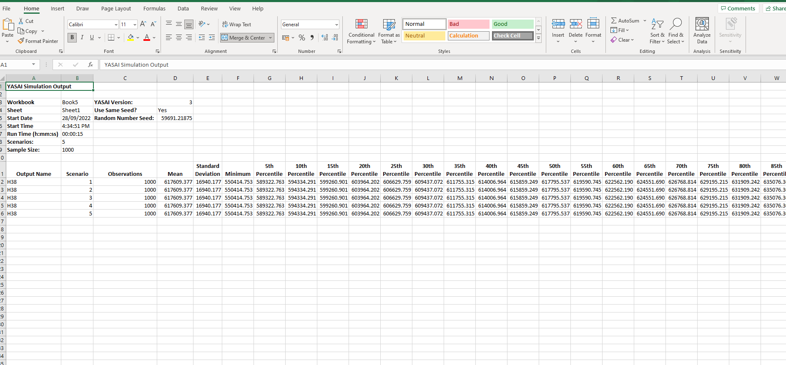
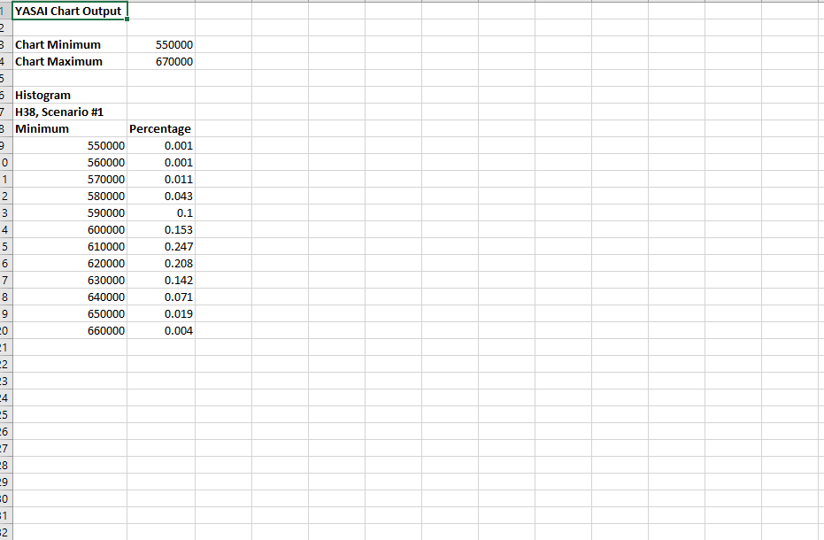
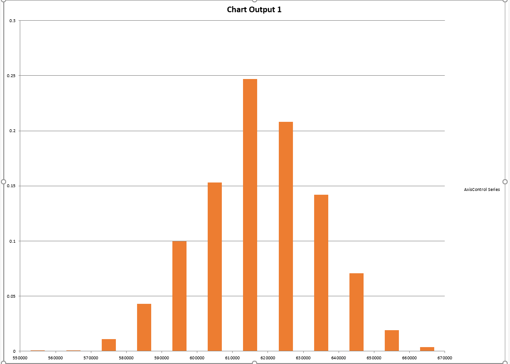

The focus of unit 8 was on implementing quantitative risk models. I
found this to be the most difficult unit as I had no experience with
QRA. I did get some familiarity with Yasai which I used to implement
the
course text model. I had no chance to experiment with crystal
ball or other software.
Seminar Activities
Q:How do Goerlandt et al (2017)
suggest that the validity of QRA approaches can be validated? What did
they posit was the most effective approach?
Q:Which techniques did Hugo et al (2018) should be applied to project management? What were their recommendations to increase the use of QR analysis in Projects?
Hugo et al (2018) found out that QRA tools have a positive impact on project management although their adoption can depend on a number of factors such as individual competence, organisational approach, maturity levels and resources available for project and risk management. Furthermore they also identified that to improve the use of risk management tools it is recommended to increase the risk management competence of individuals via training, to align the organisations approach to risk management and to make available the required resources to carry out risk management.
Q:The last paper reviews various Multi-criteria decision methods (MCDMs) and considered the relative accuracy and validity of the techniques. Which did they find was the most accurate of the methods compared? What were the failings of the general TOPSIS approach?
Out of the methods considered AHP has the best ranking results. A number of weaknesses have been identified in the TOPSIS approach mainly related to the spread of the data set and euclidean space assumptions, distance calculations as well as raking indexes. Without iprovement in these areas using TOPSIS for MCDM may lead to the wrong decisions.
Reflection on Unit 8
Some of the papers included as reading for this unit were arguably complicated and above my current level of understanding of QRA topics. Nevertheless I read them and some of them more than once trying to understand the arguments which authors were trying to make. It is indeed understandable that QRA is landscape full of different methodologies, mathematics, probabilities, and ways to see the world. If one invests an appropriate effort it is certainly possible to understand QRAs and their considerations and therefore this was a reach experience for me as I had the feeling that finally I do understand the basics behind such methods and I am also in a position to compare and contrast things. That was a great and joyful achievement.
Simulations with Yasai
Understanding Yasai was a little bit of a challenge but I played
around with a few different scenarios in the yasai tool and thankfully
a couple of youtube videos had good explanations on how to run models.
The seminar itself was also helpful in understanding what needs to be
done. I also found that Yasai documentation was mostly relevant for
people who have already used simulation software of some short and are
familiar with Monte Carlo techniques and focused first on
understanding how a simulation could be run in excel manually, without
using the Yasai plugin.Once a few rounds are run and once someone plays
around with the various inputs and outputs things make much more sense.



